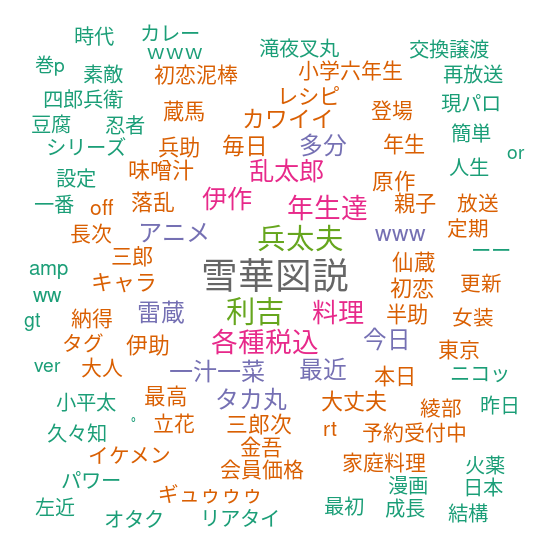
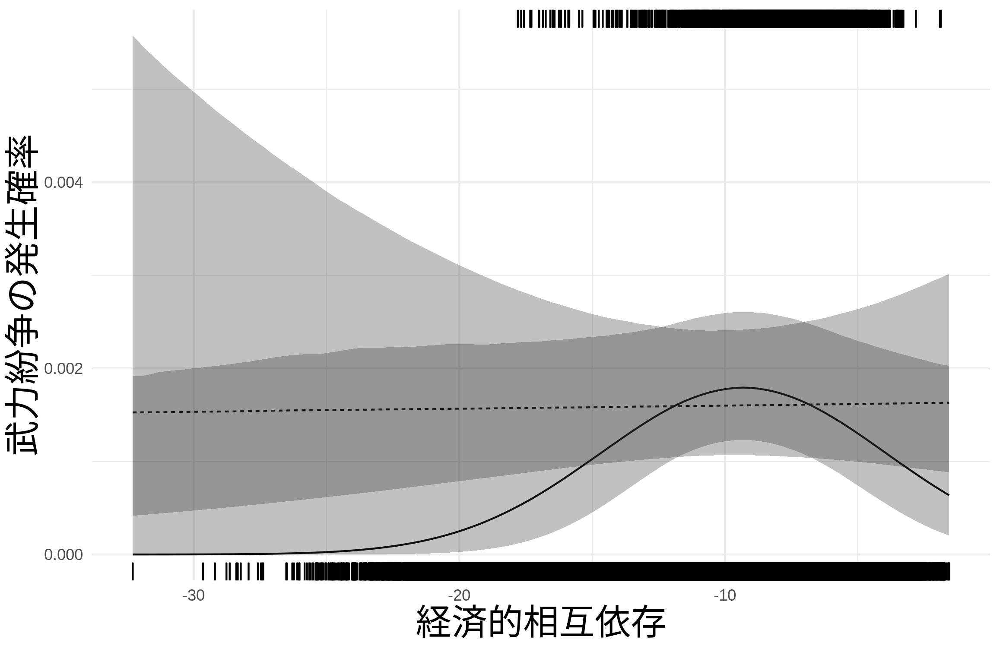
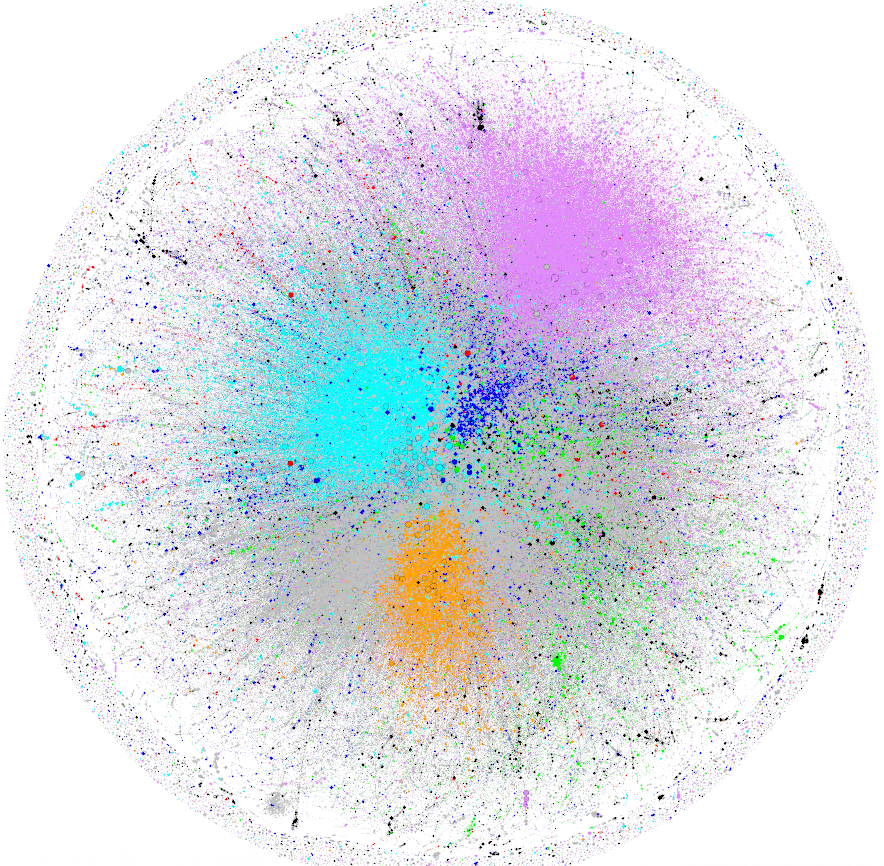
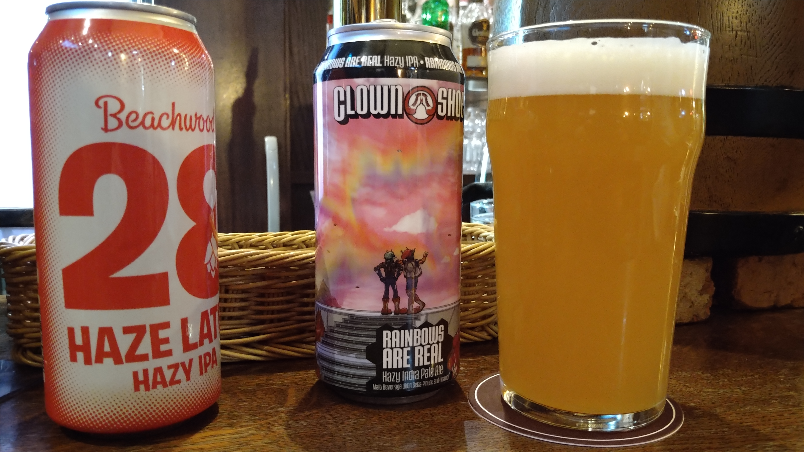

自己紹介
1 何者か？
東西ドイツが統一した年あたりに生まれる。



国際関係論 (International Relations: IR) が専門
- グローバル経済が国際政治や安全保障に与える影響
- 経済的な繋がりが強まると平和になる？
- 経済的な繋がりをどのように政治的に利用する？
- グローバルな株式ネットワークに問題はない？
- いつの間にか重要な企業が他国の支配下に？
- いつの間にか投資したお金が環境問題を起こしている企業に？


ゲーム理論：個人や組織の相互作用を数理的に分析（ミクロ経済学の一分野）
データ分析：政治に関するデータから特徴や因果関係を発見（計量経済学や機械学習）
- 詳しくはresearchmapやGoogle Scholarを見てね。
- やっていない先生もいるので注意！
連絡先
- メール：sdoi0504@juris.hokudai.ac.jp
- Twitter：sdoi0504
2 好きなもの





3 政治学をしよう！
せっかくなので政治学（じゃなくてもなんでもいいですが）をしてみましょう。
- 論文を書いたり、共同研究をしてみたり。
- 大学院進学を考えている人はぜひ相談してください。
- 北海道大学大学院法学研究科
- 北海道大学公共政策大学院

授業に関係のないことでも、話したいことがあったらメールやTwitterのDMを送ってください。
法学部棟609号室にいるので、訪問しに来ても構いません。